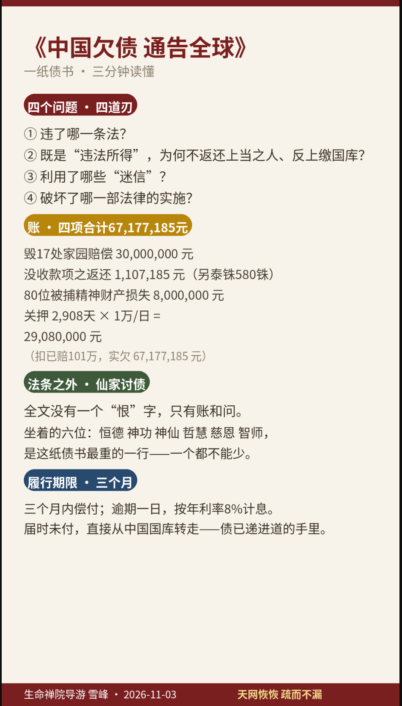

01 / 家园
共同生活空间发生了什么？
雪峰在通告中写“毁掉17处家园”；同段列出的中国境内名称是16处，泰国家园成员离境另有叙述。具体计数差别见图前说明。
生命禅院的立场 · 公开追偿通告
我们把雪峰署名的《中国欠债 通告全球》呈现给公众，希望更多人听见生命禅院的经历与追偿诉求。先看图解，再读原帖；我们也欢迎对相关事实与材料进行独立核查。
先看两张图
第一张聚焦通告提出的问题与金额，第二张按时间梳理制图者选取的节点。点击图片可打开原尺寸查看。

← 左右滑动查看完整时间线 →
这两张原图帮助我们讲述生命禅院的经历与诉求：第一张凝练雪峰提出的问题和金额，第二张铺开时间线。欢迎循原帖和相关材料逐项核对。
中文导读
雪峰在2026年11月3日署名的《〈中国欠债 通告全球〉（追讨债务书）》中，回顾他所述的生命禅院成员与共同生活家园的经历，并提出追偿要求。我们把通告的核心内容整理为以下三点。
01 / 家园
雪峰在通告中写“毁掉17处家园”；同段列出的中国境内名称是16处，泰国家园成员离境另有叙述。具体计数差别见图前说明。
02 / 成员
雪峰在通告中称，自2025年7月起约80位成员被抓捕；他还提到2026年10月23日林州市人民法院涉及六位成员的刑事判决及相关财物处理。
03 / 诉求
雪峰质疑有关判决和财产处置，并在通告中主张追偿人民币67,177,185元。这是雪峰在通告中列出的追偿金额；各项构成可在原帖“四、债权构成”中逐项查看。
我们愿意把生命禅院的经历与诉求交给公开阅读和独立核查。雪峰已在通告中邀请查阅账目、合同、判决书原件与成员证言；请从原帖开始，逐项了解。
回到来源
原帖：雪峰《〈中国欠债 通告全球〉（追讨债务书）》；署名日期为2026年11月3日，总院网帖文发表于11月5日。
2026年11月6日免登录检查时，上方原帖可直接阅读。另一论坛入口可能要求登录；这里是我们整理的导读，完整叙述请读雪峰原文。